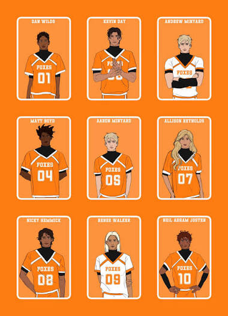
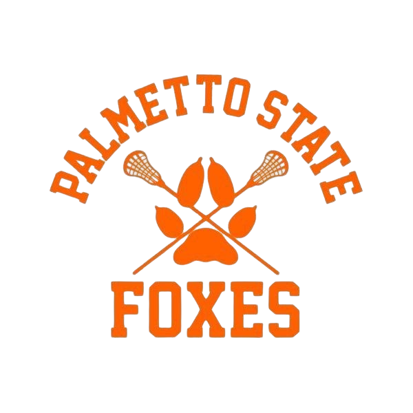

Come See the Foxes!
Hello everybody! The Foxes are our lovely Palmetto State College EXY Team. We may not have the best team, but our dear Coach, David Wymack, is doing something great for the kids of this team.

If you are interested in our up coming games or updated stats, just look at the proper links above!
We make sure to have up-to-date information on our players stats and who is on our roaster.
If you are someone who is down on their luck and needs a scholarship, just give Coach Wymack a call! Roaster closes in May.
